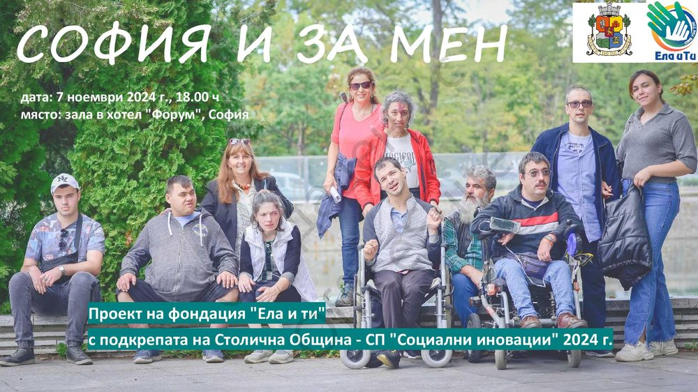
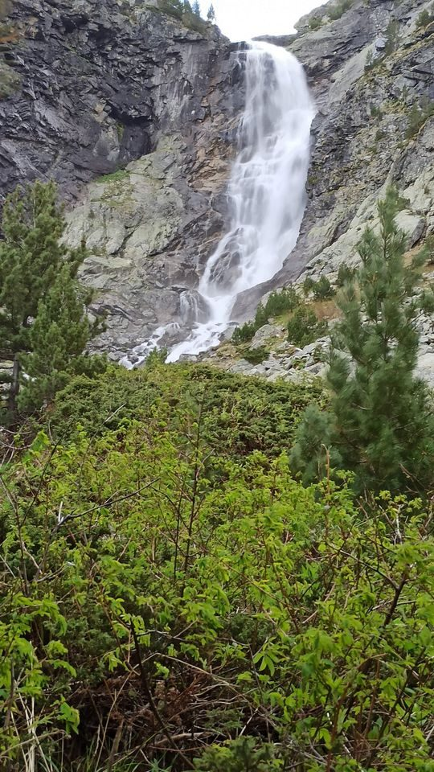
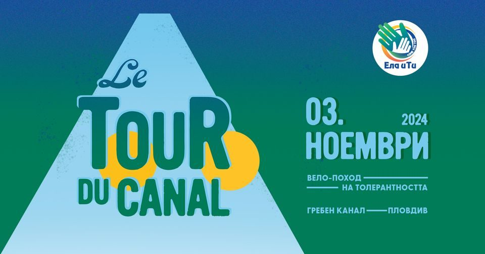
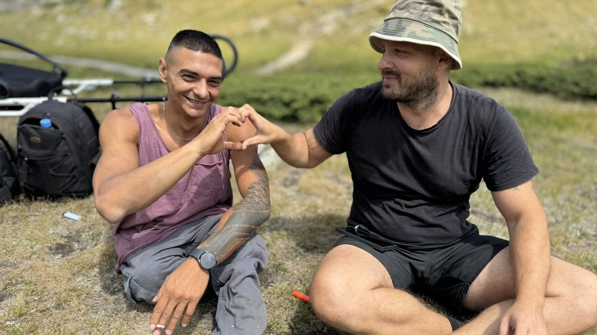

София и за мен
Представихме първата карта на адаптиран маршрут за хора в количка. 34 забележителности в центъра на София и маршрут, който всеки избира сам — кога да тръгне и какво да види.
Виж събитиетоСъбития
Планини, пещери, водопади, канали. Всяко от тези събития започва с един разговор и завършва с човек, който вижда нещо за първи път. Ето последните четири — с датата, с пътя и с хората.




Минали събития
Представихме първата карта на адаптиран маршрут за хора в количка. 34 забележителности в центъра на София и маршрут, който всеки избира сам — кога да тръгне и какво да види.
Виж събитиетоНай-високият водопад в Рила. Група от петима приятели в количка, планински спасители и екип, който носи, когато пътеката свърши.
Виж събитиетоОбиколка на Гребния канал с колела, триколки, колички, скейтборд и ролери. Един ден, в който никой не е гост на другите.
Виж събитиетоПламен мечтаеше да посрещне рождения си ден на Рилските езера. С приятели, шейни и доброволци — посрещна го там, на 2 200 метра.
Виж събитиетоДатите излизат първо във Facebook. Кажи ни, че искаш да си там — и ще те потърсим.